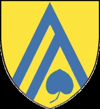

Antavla
375597 Märta Abjörnsdotter (Bagge af Berga)
Blev ca 66 år.

Far:
Abjörn Jönsson (Bagge af Berga) (1370? - 1432)
Mor:
Karin Dansdotter (1375 - )
Född:
omkring 1430 Ljungby (G).
[1]
Död:
1496 Ljungby (G).
[1]
Barn med
375596 Nils Svensson Krumme (<1441 - >1486)
Barn:
Björn Nilsson (Krumme) (1445? - >1497)
Personhistoria
Årtal
Ålder
Händelse
1430?
Födelse omkring 1430 Ljungby (G)
[1]
1432
Fadern
751194 Abjörn Jönsson (Bagge af Berga)
dör 1432
[2]
1445?
Sonen
187798 Björn Nilsson (Krumme)
föds omkring 1445
>1486
Partnern
375596 Nils Svensson Krumme
dör mellan 1486 och 1496 Hjälmaryd (G)
[3]
1496
Död 1496 Ljungby (G)
[1]
Källor
[1]
Kenneth Bergman
[2]
Abjörn Jönsson och 4 döttrar
[3]
Krumme stamtabell